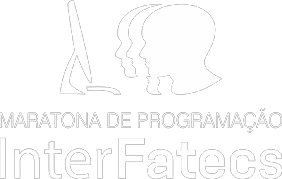

{Programação Competitiva}

Sobre
O que é?
O site "Programação Competitiva" é uma plataforma dedicada à divulgação e promoção de competições e maratonas de programação. Ele fornecerá informações detalhadas sobre esses eventos e um histórico das competições realizadas na faculdade Fatec Ourinhos, servindo como uma fonte valiosa de referência para potenciais participantes.
Objetivos
Os objetivos do site incluem a apresentação de uma agenda atualizada das próximas competições. Essa agenda não só serve como um guia para os interessados em participar de futuros eventos, mas também busca atrair programadores de todos os níveis, incentivando-os a explorar e se envolver na programação competitiva. Principalmente, o site visa informar os interessados e despertar o interesse em um campo emocionante da informática, contribuindo assim para o crescimento e desenvolvimento da comunidade de programação competitiva.
Organizadores das Maratonas
A Maratona de Programação InterFatecs é um evento anual promovido pelas Fatec - Faculdades de Tecnologia do Estado de São Paulo e o CPS - Centro Estadual de Educação Tecnológica Paula Souza que reúne estudantes e docentes das várias Fatecs que oferecem cursos na área de Informática. Para mais informações, acesse: www.interfatecs.com.br
A Maratona SBC de Programação é um evento da Sociedade Brasileira de Computação que existe desde o ano de 1996. Nasceu das competições regionais classificatórias para as etapas mundiais da competição de programação, o International Collegiate Programming Contest, e é parte da regional sul-americana do evento. Para mais informações, acesse: https://maratona.sbc.org.br/index.html
Maratona de Programação FATEC-Ourinhos
A Maratona de Programação Fatec Ourinhos é um evento anual que atrai participantes de diversas cidades. Esta competição desafia equipes de programadores a resolverem problemas complexos em um período de tempo limitado, promovendo o trabalho em equipe, o raciocínio lógico e a criatividade. Com uma atmosfera competitiva e colaborativa, a maratona é uma oportunidade única para estudantes e profissionais demonstrarem suas habilidades em programação e se conectarem com outros entusiastas da área.
Inscrição
Como Fazer?
Para participar de qualquer maratona ou competição, o processo de inscrição é simples: basta entrar em contato com o responsável pelas inscrições e seu nome será inscrito. O contato do responsável está logo abaixo.
Como se Preparar?
Para se preparar para uma competição ou maratona de programação, é importante estabelecer um cronograma de estudos e prática, dedicando tempo diariamente para resolver desafios de programação e revisar conceitos-chave. Além disso, é essencial participar de competições menores para ganhar experiência e trabalhar em equipe. Por fim, é crucial manter uma atitude positiva, persistência e motivação para enfrentar os desafios que surgirão.
Responsável pelas inscrições:
Alex Marino. Contato: (11) 99426-5062. Paulo Galego. Contato:
Agenda
Próximas competições:
InterFatecs:
- 1ª Fase: - 18/05/2024 (18 de Maio)
- 2ª Fase: - 28/09/2024 (28 de Setembro)
- Previsto para Outubro
- Competição Interna - 20/04/2024 (20 de Abril) - Local: Fatec Ourinhos